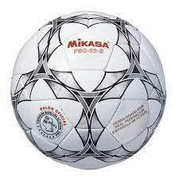

Dos cosas que no dejaría de hacer por nada del mundo:

| Nombre | Aficiones | Estudios académicos | Trabajos | |
|---|---|---|---|---|
| David Álvaro Delgado | Leer libros, visitar nuevos lugares, aprender nuevas cosas, ver series y pelis, jugar al fútbol sala, salir y hacer planes con mis amigos y cuidar a mi perro | Ceip Vicálvaro: 2008 - 2016 Ies Villablanca: 2017 - 2022 | Verano de 2021, trabajé ayudando en un bar |